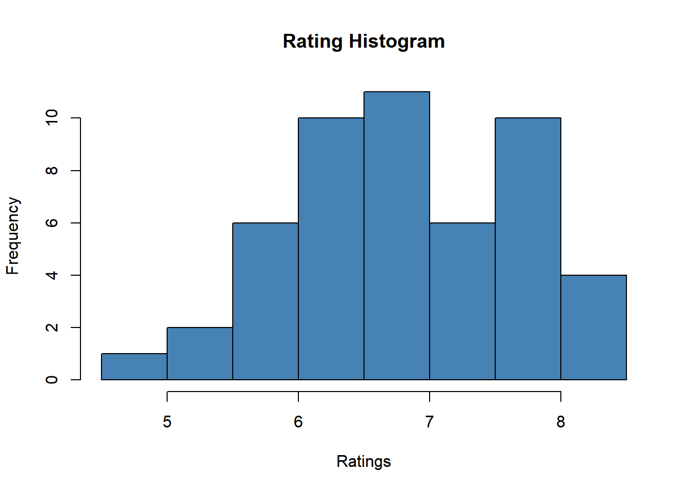
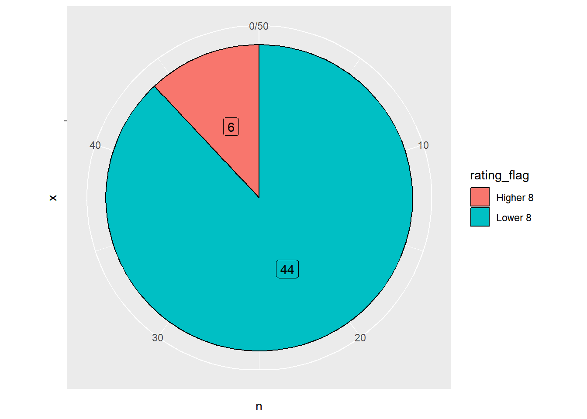

## Before you start, you need to execute once the code below.
##install.packages("rvest")1 BDA-503 Assigment 1
A short brief of author and R use cases
1.1 Introduction
Hi dear reader,
I’m Emre Çakmak from Istanbul/Turkey. I graduated from my bachelor at Istanbul Technical University, Industrial Engineering Department in 2018.
My current role is Data Scientist at E-commerce Department in LC Waikiki which is a Istanbul based global fashion retailer driving operations on more than 50 countries. I had different positions like Data Analyst, Business Intelligence Specialist in different companies during past 4 years. Especially in last 1 year, I dedicated to improve myself for application of ML Technics due to enrich customer&item based data. So, I’m a part of BDA Graduate Program in MEF University to wide my knowledge in audience management and marketing applications by the help of real-life use cases.
1.2 RStudio Global 2022 Conference - Quarto for the Curious

What’s Quarto according to Tom Mock
In this paragraph, I aim to give you some main differences between Quarto, the brand new documentation system which has been released April 2022, and RMarkdown being used for almost a decade.
- Tom Mock says Quarto is Open source scientific and technical publishing system. Also he added that Quarto is the next generation of RMarkdown.
Here is some differences between them:
1.2.1 Preprocessing
Altough it seems like they have almost same workflow behind the scenes; Quarto doesn’t need to have R in the system to use it. It means that you can use Quarto in a fresh computer but Rmarkdown needs to have R in the system.
1.2.2 Language Support
The main purpose of releasing Quarto is improving the communication between data science communities whatever their language is. Because of this Quarto supports other languages as engine.
This availability in Quarto and not limiting with R allows people to collaborate as Python developer with others. Tom Mock figured this situation out like
- Quarto: Comfortable baking in your own kitchen
- RMarkdown: Uncomfortable baking in corporate kitchen
1.3 R Posts
This section includes 3 different R Programming use case
1.3.1 Web Scraping with R
It’s very known fact that people have some struggle to access to a clean dataset. In these cases, we need to be a little bit creative to create our own dataset. And one way of the creating a new dataset is web scraping.
In this paragraph, I want to introduce how to scrape a web page by the help of R packages. The most common 2 packages are:
- {rvest}
- {RSelenium}
Note that: Some websites have strict policies against scraping. Be careful!
Step by step scraping of public IMDB Dataset
Step 1: Install Package
Step 2: Call the library and use html functions
## call the rvest library for required functions
library(rvest)
## define the website link you want to scrape
link = "https://www.imdb.com/search/title/?title_type=feature&num_votes=30000,&genres=comedy"
## send a http get request to the link above and store it in a variable
page = read_html(link)
## filter and grab all elements in same class
titles = page %>% html_nodes(".lister-item-header a") %>% html_text()
## preview the titles
titles[1:10] [1] "Bullet Train"
[2] "The Banshees of Inisherin"
[3] "Amsterdam"
[4] "The Menu"
[5] "Love Actually"
[6] "National Lampoon's Christmas Vacation"
[7] "A Christmas Story"
[8] "Home Alone"
[9] "The Addams Family"
[10] "Triangle of Sadness" Step 3: Create other variables
## apply same procedure to other variables
year= page %>% html_nodes(".text-muted.unbold") %>% html_text()
rating = page %>% html_nodes(".ratings-imdb-rating strong") %>% html_text()
## preview variables
year[1:10] [1] "(2022)" "(2022)" "(2022)" "(2022)" "(2003)" "(1989)" "(1983)" "(1990)"
[9] "(1991)" "(2022)"rating[1:10] [1] "7.3" "8.0" "6.1" "7.5" "7.6" "7.5" "7.9" "7.7" "6.9" "7.6"Step 4: Create data frame
## create a dataset
movies = data.frame(titles, year, rating, stringsAsFactors = FALSE)
movies[1:10,] titles year rating
1 Bullet Train (2022) 7.3
2 The Banshees of Inisherin (2022) 8.0
3 Amsterdam (2022) 6.1
4 The Menu (2022) 7.5
5 Love Actually (2003) 7.6
6 National Lampoon's Christmas Vacation (1989) 7.5
7 A Christmas Story (1983) 7.9
8 Home Alone (1990) 7.7
9 The Addams Family (1991) 6.9
10 Triangle of Sadness (2022) 7.6References of web scraping with R:
1.3.2 Simple Aggregations on Dataset
This part provides some basic aggregations and data manipulation methods in R via {dplyr} package.
Without leaving the concept in previous part, we can assume that we created our own dataset. So, what’s next?
The process of extracting insightful information from datasets starts from understanding the data structure and manipulating them. R provides a package just for this: {dplyr}
Step by step aggregation & filtering & summarizing dataset
Step 1: Install Package
## Before you start, you need to execute once the code below.
##install.packages("dplyr")Step 2: Call the library
library(dplyr)
Attaching package: 'dplyr'The following objects are masked from 'package:stats':
filter, lagThe following objects are masked from 'package:base':
intersect, setdiff, setequal, unionStep 3: Select subset of data in different aspects
## selecting specific columns
select(movies, titles, year)[1:10,] titles year
1 Bullet Train (2022)
2 The Banshees of Inisherin (2022)
3 Amsterdam (2022)
4 The Menu (2022)
5 Love Actually (2003)
6 National Lampoon's Christmas Vacation (1989)
7 A Christmas Story (1983)
8 Home Alone (1990)
9 The Addams Family (1991)
10 Triangle of Sadness (2022)## filter data according to specific condition
filter(movies, rating > 8) titles year rating
1 The Banshees of Inisherin (2022) 8.0
2 Everything Everywhere All at Once (2022) 8.1
3 Klaus (2019) 8.1
4 Spider-Man: Into the Spider-Verse (2018) 8.4
5 The Wolf of Wall Street (2013) 8.2
6 Guardians of the Galaxy (2014) 8.0## sort rows
arrange(movies, desc(titles))[1:10,] titles year rating
1 Zoolander (2001) 6.5
2 White Christmas (1954) 7.5
3 Triangle of Sadness (2022) 7.6
4 Ticket to Paradise (2022) 6.2
5 Thor: Love and Thunder (2022) 6.3
6 The Wolf of Wall Street (2013) 8.2
7 The Santa Clause 3: The Escape Clause (2006) 4.8
8 The Santa Clause 2 (2002) 5.7
9 The Santa Clause (1994) 6.5
10 The Polar Express (2004) 6.6## select top n rows
top_n(movies, 3, titles) titles year rating
1 Triangle of Sadness (2022) 7.6
2 White Christmas (1954) 7.5
3 Zoolander (2001) 6.5Step 4: Summarize Dataset
## convert rating columns as numeric and calculate the average
summarise(movies, average_rating = mean(as.numeric(rating))) average_rating
1 6.868## group by and summarize
grouped_data = group_by(movies, year)
summarise(grouped_data, average_rating = mean(as.numeric(rating)))[1:5,]# A tibble: 5 × 2
year average_rating
<chr> <dbl>
1 (1947) 7.9
2 (1954) 7.5
3 (1983) 7.6
4 (1984) 7.3
5 (1988) 6.9Step 5: %>% Operator
This operator takes the object from the left and gives it as the first argument to the function on the right. It makes your code more readable.
## same grouping and summarizing operation at step4
movies %>%
group_by(year) %>%
summarise(average_rating = mean(as.numeric(rating)))%>%
top_n(5, desc(average_rating))# A tibble: 5 × 2
year average_rating
<chr> <dbl>
1 (1996) 5.7
2 (2002) 5.7
3 (2008) 5.7
4 (2017) 5.6
5 (2020) 5.8Reference of aggregations with R:
1.3.3 Visualization with R
Step 1: Install Package
## Before you start, you need to execute once the code below.
##install.packages("ggplot2")Step 2: Call the library
library(ggplot2)Step 3: Histogram with ggplot2
## convert rating field as numeric and keep in original dataset
movies$rating=as.numeric(rating)
## histogram for ratings
hist(movies$rating,col='steelblue',main='Rating Histogram',
xlab='Ratings')
Step 4: Pie Chart with ggplot2
## Set a new flag in dataset
movies=movies %>% mutate(rating_flag = case_when(rating>=8~ "Higher 8", TRUE ~ "Lower 8"))
## creating a new table for better visualization
count_movies=movies %>% count(rating_flag)
## pie chart according to rating of movies
ggplot(count_movies, aes(x = "", y = n, fill = rating_flag)) +
geom_col(color = "black") +
geom_label(aes(label = n),
position = position_stack(vjust = 0.5),
show.legend = FALSE) +
coord_polar(theta = "y")
References of visualization with R: